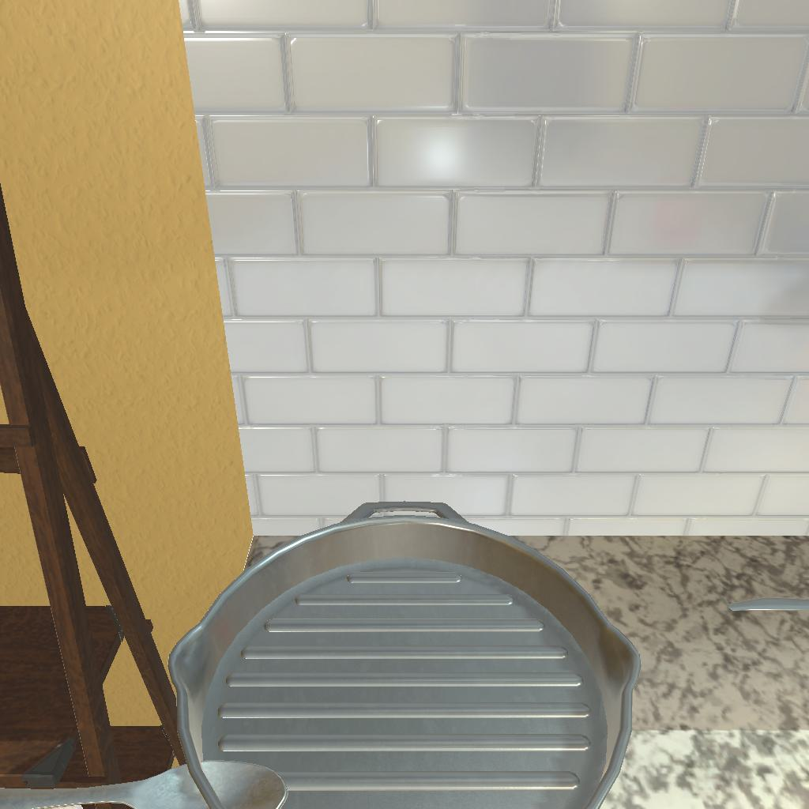

---------------------------------------------------------task: 16---------------------------------------------------------
--------------------------------------------------------------------------------------------------------------------------------------------------------------------
--------------------------------------------------------------------------------------------------------------------------------------------------------------------
Step:--------------------------------------------------------------------------9-------------------------------------------------------------------------------
----------------------------------------
VLM Prompt:
Image1:
Image2:
Image3:
**Instruction**
1. Analyze the provided images to identify all visible household objects and compare the difference between images (e.h. whether the object is opened or not and taken on hand or not), focusing on those relevant to the task description "put a cool pan in sinkbasin."
2. Use the analysis of images and the task hint "The agent must find an object of the desired type, pick it up, go to a fridge, cool the object with the fridge, then find the correct location to place it, and put it down there. The agent does not need to use the fridge button or open the fridge to cool the object, and the agent just needs to do action that is "cool the object with the fridge"." to answer the question: what is the most reasonable action in the choices for the task description "put a cool pan in sinkbasin"?
3. Decide and write the answer using the template: The answer is: (i): , where i is the real number. If there is no desired object in images, search every place based on **Initial Observation** to find the object. And if no one is exactly correct, choose a similar answer.
**Initial Observation**
You are in the middle of a room. Looking quickly around you, you can see cabinet (1-9), countertop (1-3), drawer (1-9), stoveburner (1-4), microwave (1), sink (1), fridge (1), toaster (1), coffeemachine (1), sinkbasin (1), shelf (1-3), garbagecan (1)
**Answer Choices**
(1): go to cabinet 1
(2): go to cabinet 2
(3): go to countertop 2
(4): go to drawer 1
(5): go to drawer 2
(6): go to drawer 3
(7): go to drawer 4
(8): go to stoveburner 1
(9): go to drawer 5
(10): go to stoveburner 2
(11): go to stoveburner 3
(12): go to stoveburner 4
(13): go to cabinet 3
(14): go to cabinet 4
(15): go to microwave 1
(16): go to cabinet 5
(17): go to cabinet 6
(18): go to cabinet 7
(19): go to sink 1
(20): go to fridge 1
(21): go to toaster 1
(22): go to coffeemachine 1
(23): go to cabinet 8
(24): go to drawer 6
(25): go to drawer 7
(26): go to drawer 8
(27): go to sinkbasin 1
(28): go to shelf 1
(29): go to shelf 2
(30): go to countertop 3
(31): go to shelf 3
(32): go to drawer 9
(33): go to cabinet 9
(34): go to garbagecan 1
(35): put pan 1 in/on countertop 1
(36): examine pan 1
(37): examine countertop 1
**Answer**
Let's think step by step by following the instructions.
----------------------------------------
----------------------------------------
Original Response:
The task is to put a cool pan in the sinkbasin. To accomplish this, the agent must first find a pan, cool it with the fridge, and then place it in the sinkbasin.
Image Analysis:
- Image 1 shows a pan on the countertop with a tomato next to it. The pan is not in hand and is not on the stoveburner, indicating it is not being used or heated currently.
- Image 2 and Image 3 appear to be identical and do not show any additional objects or changes from Image 1.
Based on the initial observation, the agent is in the middle of a room surrounded by various household objects and locations. The pan is already located on the countertop, so the agent does not need to search for it in cabinets or drawers.
Given the task description and hint, the agent does not need to interact with the fridge buttons or open the fridge. The agent just needs to perform the action of cooling the object with the fridge.
The most reasonable action from the provided choices, considering the analysis and the task, would be to cool the pan with the fridge and then place it in the sinkbasin.
Since the choices do not include an action to cool the pan with the fridge directly, the agent should perform the next logical step, which is to go to the location where the pan can be placed after being cooled.
The answer is: (27): go to sinkbasin 1. This is because the sinkbasin is the final location where the pan needs to be placed according to the task description. The agent will need to simulate or assume the action of cooling the pan with the fridge before this step.
----------------------------------------
----------------------------------------
>>> Refine Original VLM Response and Get Pure Action: go to sinkbasin 1
----------------------------------------
-----------------------------------------------------------------
Running time: 14.579939603805542 seconds
Total Money: 9.432650000000006
-----------------------------------------------------------------
-----------------------------------------------------------------
Text Observation:You arrive at loc 27. On the sinkbasin 1, you see a spoon 1, a vase 1, a faucet 1, and a knife 1.
-----------------------------------------------------------------
UNSUCCEED